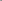

<!doctype html><html lang="ru"><meta charset="utf-8"><meta name="viewport" content="width=device-width,initial-scale=1"><meta name="robots" content="noindex,nofollow"><link rel="icon" href="data:, "><title>Лак · Blender-студия</title><link rel="stylesheet" href="demo.css"><header><nav><a href="ink.html">Чернила</a><a href="lacquer.html">Лак</a><a href="breath.html">Вдох</a></nav><h1>Лак</h1><p>Проведите мышью или пальцем по фигурам. На телефоне прокрутка остаётся свободной.</p></header><main class="hero" id="studio"><canvas class="hero-canvas" aria-hidden="true"></canvas></main><footer><p>В покое показан SVG. Без JavaScript, GPU и при сокращённой анимации он остаётся видимым.</p><p>Демо использует ваши файлы из assets/manifest.json. Выполните render.py и pack.py по инструкции навыка.</p></footer><script type="module">import {start} from './studio.js';start({selector:'#studio',manifest:'./assets/manifest.json',effect:'lacquer'});</script></html>